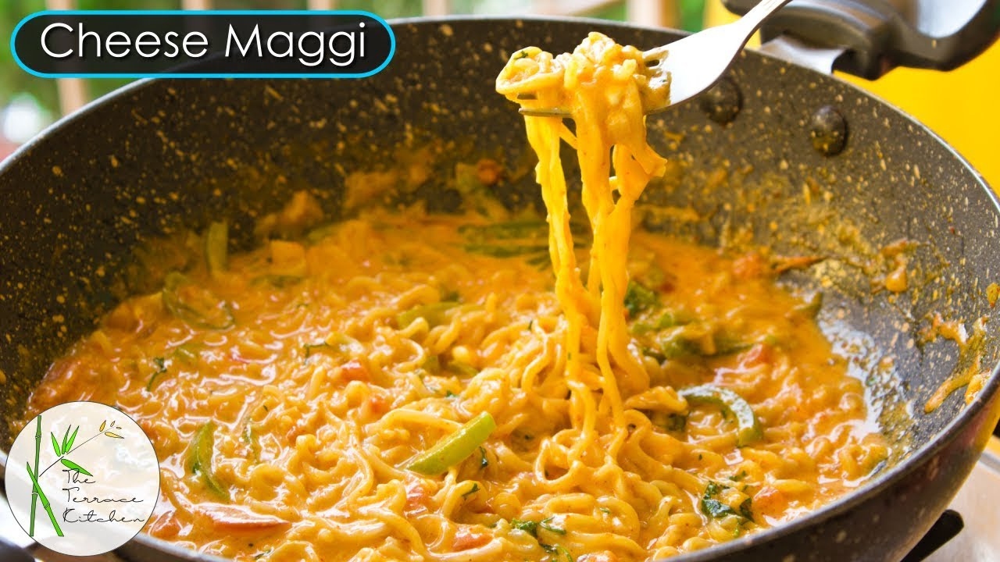

Cheese Maggi

Description
If there's a food in India that is associated with probably the majority
of the best of food memories…then it's Maggi. Be it the memories of having
on the rooftops in winter evenings or in front of the TV watching your
favourite movies and shows, or being in a hostel cooking and making maggi
and awesome memories together. Be it coming late from work and being
completely exhausted to cook a meal, there's our beloved maggi that hardly
takes 5 minutes to be ready and fill up our belly or when you're not so
well and the medications have left a bad taste in your mouth, so much so
that nothing tastes good except….well you guessed it, it's maggi, our dear
beloved maggi has always been there for us in the time of need. Ok that
last bit of my segway into our today's dish most probably is rather
dramatic so I'm now going to stop and get straight into the recipe for
cheese Maggi.
Ingredients
- Maggi Noodles(2 cakes)
- Cheese (Preferably sliced, 1 slice, 2 if you want extra cheese)
- Garlic (2 cloves, chopped into thin slices)
- Capsicum (around ¼ of a normal sized capsicum, finely chopped)
- Onion (1, finely chopped)
- Olives (optional, 4, sliced)
- Button Mushrooms (optional, 4, finely chopped)
- Oregano (1 teaspoon or according to your taste)
- Chilli flakes (1 teaspoon or according to your taste)
- Butter (about 30gms)
- Salt (¼ teaspoon or according to your taste)
Method
-
Take a wok and add the butter in it and let it melt and heat up on
medium flame.
-
After the butter heats up and starts to bubble, add in our sliced garlic
and stir fry the garlic in the butter for about 10 seconds
-
Then add the capsicum, onion, Button Mushrooms, olives, salt and stir
fry for 1 minute
-
Add 3 cups of water and add the Maggi masala that comes along with the
noodles and let it boil.
-
Once boiled, add the cheese and stir for 1 minute, then add the noodle
cakes in it and let it cook for about 5 minutes, but keep stirring it
every minute.
-
After that, turn off the flame and add the oregano and chilli flakes,
mix well and serve. Your delicious Maggi is ready to be enjoyed.